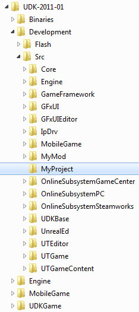
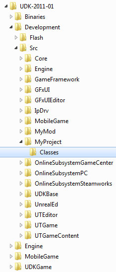
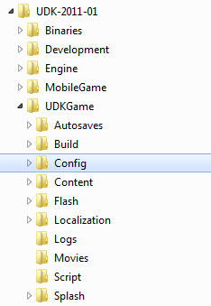
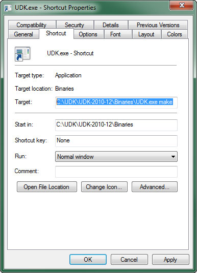
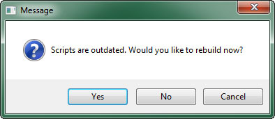
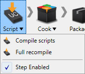

UDN
Search public documentation:
CustomUnrealScriptProjectsKR
English Translation
日本語訳
中国翻译
Interested in the Unreal Engine?
Visit the Unreal Technology site.
Looking for jobs and company info?
Check out the Epic games site.
Questions about support via UDN?
Contact the UDN Staff
日本語訳
中国翻译
Interested in the Unreal Engine?
Visit the Unreal Technology site.
Looking for jobs and company info?
Check out the Epic games site.
Questions about support via UDN?
Contact the UDN Staff
커스텀 언리얼스크립트 프로젝트
개요
언리얼 엔진 게임에 새로운 게임플레이 요소와 기타 항목을 추가시키려면, 이 요소를 정의하는 언리얼스크립트를 생성해야 합니다. 그리고서 이 스크립트를 프로젝트에 추가시킨 다음 컴파일해 줘야 게임에서 사용할 수 있습니다. 언리얼스크립트는 조직화 목적으로 각기 다른 프로젝트 속에 분할시키며, 추후 각 프로젝트당 한 패키지씩, 패키지 속으로 컴파일시킵니다. 그렇기에 여기서는 프로젝트와 패키지라는 용어가 혼재되어 쓰일 것입니다. 엔진에는 디폴트 프로젝트가 여럿 있습니다. 예를 들어 Core 프로젝트는 베이스 Object 클래스와 기타 베이스 레벨 클래스를 포함하고 있습니다. Engine 프로젝트는 엔진 대부분을 이루는 클래스를 포함하고 있습니다. 일반적으로 기존 프로젝트의 클래스를 변경하거나, 새 클래스를 추가하는 것은 좋지 않습니다. 그렇게 할 수 없다는 것은 아니나, 이 프로젝트 중 하나에 새로 추가된 클래스는 새 프로젝트에도 추가될 수 있기에, 변경에 신중을 기하는 것이 좋다 하겠습니다. 게임을 이루는 프로젝트의 수에는 제한이 없습니다. 보통 특정 게임 전용으로 쓰이는 클래스를 이루는 프로젝트는 하나 내지 두 개의 메인 프로젝트에 포함됩니다 (그렇게 하는 이유에 대해서는 프로젝트 추가하기 부분 참고). 표준적인 사례라면 게임 이름이나 코드명 또는 그 약자를 따서 프로젝트를 만드는 것입니다. 예로 Unreal Tournament 게임은 UTGame 을 사용하며, Gears of War 게임은 GearGame 을 사용합니다.프로젝트 디렉토리 만들기
언리얼스크립트 프로젝트는 관련 스크립트 모음집일 뿐이기에, 새 언리얼스크립트 프로젝트를 만든다는 것은 단지 그 스크립트용 저장소, 다른 말로 프로젝트 디렉토리를 만든다는 것에 지나지 않습니다. 모든 언리얼스크립트 프로젝트 디렉토리는../Development/Src 폴더에 있어야 하며, 프로젝트와 같은 이름이어야 합니다.
MyProject 라는 이름의 언리얼스크립트 프로젝트를 만들고자 한다면, 프로젝트 디렉토리 구조는 다음과 같습니다:

프로젝트 디렉토리 내에는 프로젝트에 속하는 언리얼스크립트 전부를 담게 되는Classes 폴더가 있어야 합니다. 프로젝트에 속하는 스크립트는 무엇이든 여기에 저장되는 것입니다.
위의 MyProject 언리얼스크립트 프로젝트에 대한 최종 프로젝트 디렉토리는:

프로젝트 폴더와Classes 폴더가 존재한다면, 기술적으로 프로젝트는 이미 생성된 것이며 새로운 스크립트는 Classes 폴더 안에다 생성 또는 추가시킬 수 있는 것입니다.
프로젝트 추가하기
프로젝트 디렉토리를 만들었어도, 게임에서 사용할 프로젝트를 빌드할 때가 되면 엔진에 프로젝트의 존재를 알려줘야 컴파일 과정에 포함됩니다. 엔진은 프로젝트 목록으로EditPackages 배열을 사용하여 어느 프로젝트를 포함시킬지 컴파일할지를 결정합니다. 엔진에 프로젝트를 추가하려면 DefaultEngine.ini 파일을 EditPackages 배열에 있는 새 프로젝트를 포함하도록 수정해 줘야 합니다. DefaultEngine.ini 파일은 게임 디렉토리의 Config 폴더에서 찾을 수 있습니다. 예를 들어 UDK 의 config 파일은 다음 디렉토리에서 찾을 수 있습니다:

주: 프로젝트는 [*]Engine.ini ([*]는 게임 이름, 예를 들어 UDKEngine.ini) 가 아닌 DefaultEngine.ini 에 추가됩니다. 게임 .ini 파일은 엔진이 덮어쓸 수 있기 때문입니다. Default*.ini 파일은 절대 엔진이 덮어쓰지 않으며, 수동으로만 변경 가능합니다. 즉 "영원히" 변경되며 실수로 없어지지 않는다는 뜻입니다.EditPackages 배열에 입력하려면 .ini 파일의 [UnrealEd.EditorEngine] 부분에 추가시켜야 합니다. 예를 들어 UTGame 및 UTGameContent 예제 프로젝트를 입력하려면 DefaultEngine.ini 에 다음과 추가시키면 됩니다:
[UnrealEd.EditorEngine] +EditPackages=UTGame +EditPackages=UTGameContent프로젝트가 추가되는 순서는 극히 중요한데, 프로젝트가 컴파일되는 순서를 결정하기 때문입니다. 그런데 중요한 이유가 뭘까요? 클래스가 다른 클래스나 유형을 참조할 때는, 같은 프로젝트에 있거나 이미 컴파일된 프로젝트에 있는 것만 가능하기 때문입니다. 위의
UTGame 및 UTGameContent 를 예로 들어, UTGame 프로젝트가 UTGameContent 패키지의 클래스를 참조한다면, 컴파일러는 그 클래스가 존재하는지를 알지 못할 것이며 에러를 낼 것입니다. 이는 보통 관련된 클래스나 서로를 참조하는 클래스가 같은 프로젝트 안에 있는 이유이기도 합니다. 한 프로젝트의 한 클래스가 다른 프로젝트의 클래스를 참조했다가, 후자 프로젝트의 완전 별개 클래스가 전자 프로젝트의 또다른 클래스를 참조하는 식의 순환식 관계가 될 때면 정말이지 명확해 집니다. 그 참조 중 하나는 작동해도 다른 하나는 실패하는, 즉 프로젝트의 순서와는 관계없이 둘 중 하나는 반드시 실패하는 것입니다. 간단히 모든 클래스를 같은 프로젝트 안에 놓기만 하면 이러한 문제는 완전히 해결됩니다.
프로젝트 컴파일하기
엔진이 프로젝트의 존재를 알고 프로젝트에 최소 하나의 스크립트가 포함되어 있다면, 스크립트를 컴파일하여 그 프로젝트에 대한 패키지를 만들 수 있습니다. 스크립트를 컴파일할 수 있는 방법은 여러가지 있습니다:- Make 커맨드렛
- 게임이나 에디터를 실행시켜 자동 컴파일하기
- [[UnrealFrontendKR][UnrealFrontend]
Make 커맨드렛
커맨드렛(commandlet)이란 게임의 실행파일 내에 포함된 프로그램으로, Make 커맨드렛은 스크립트를 컴파일하고 패키지를 빌드합니다. 메인 게임 실행파일에make 를 붙여 실행시키며, 실행파일에 editor 를 붙여 언리얼 에디터를 실행시키는 것과 같은 식입니다. 다음 중 한 가지 방법으로 실행 가능합니다:
-
명령줄에 실행파일 뒤에다
make스위치를 붙여 실행C:\UDK\[Version]\Binaries> UDK.exe make -
실행파일 바로가기를 만들고
대상에다make스위치를 붙이기
자동 컴파일하기
게임이나 에디터가 시작될 때마다EditPackages 목록의 모든 프로젝트를 검사하여 새로운 스크립트가 있는지 알아봅니다. Classes 에 있는 스크립트 중 새 것이거나 업데이트된 것을 말합니다. 이는 프로젝트에 대한 패키지가 생성된 시간과 파일이 변경된 시간을 비교하여 판단합니다. 새 스크립트가 존재하면 스크립트를 다시 빌드할지 말지를 묻는 창이 뜹니다.

| 옵션 | 설명 |
|---|---|
| 예 | 위에 설명한 Make 커맨드렛을 사용하여 스크립트를 컴파일합니다. |
| 아뇨 | 새 스크립트는 무시하고 기존 패키지를 사용하여 게임이나 에디터를 실행합니다. |
| 취소 | 스크립트 컴파일도, 게임이나 에디터 실행도 하지 않고 작업 전체를 중단합니다. |
UnrealFrontend
UnrealFrontend 란 단일 작업이든, 테스팅이나 배포용 게임 빌딩 및 패키징용 파이프라인의 일환으로든, 스크립트를 빌드하는 기능을 제공하는 어플리케이션입니다. UnrealFrontend 를 통해 스크립트를 빌드하려면, 단순히 Script 버튼을 클릭하여 스크립트 컴파일하기 메뉴를 띄우면 됩니다.
다음 옵션 중 하나를 선택합니다:| 옵션 | 설명 |
|---|---|
| Compile Scripts | 새로 생겼거나 업데이트된 스크립트가 있는 프로젝트의 스크립트를 컴파일합니다. |
| Full Recompile | 변경 여부와는 상관없이 EditPackages 목록의 모든 프로젝트를 강제로 컴파일합니다. |